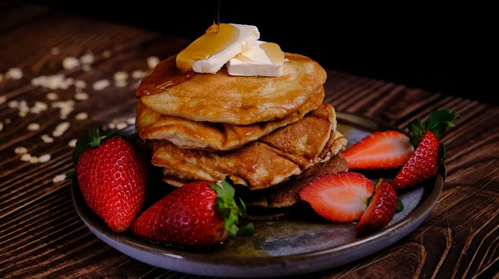
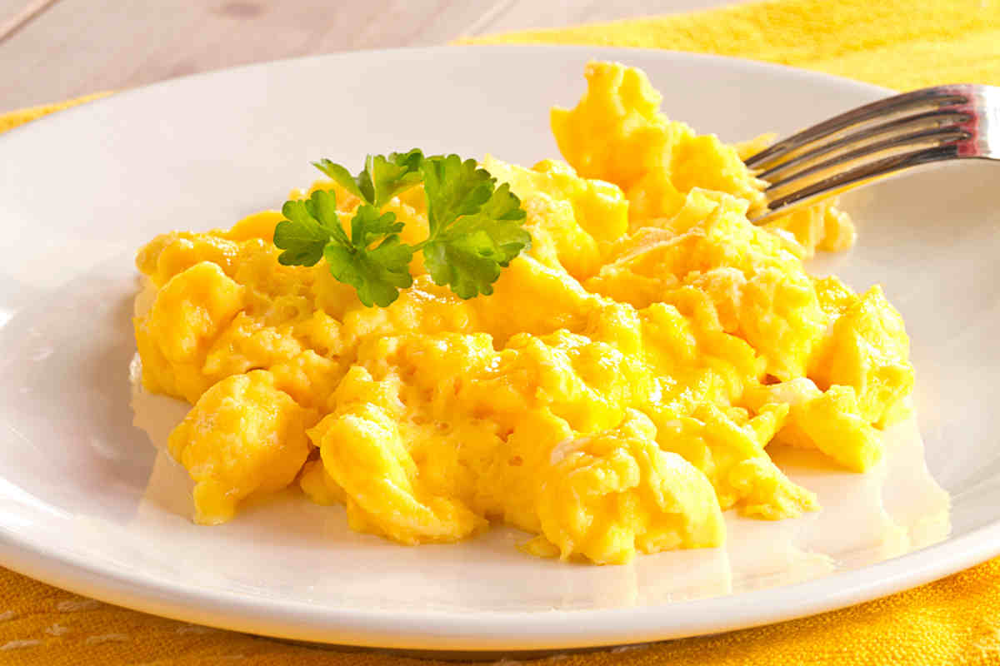
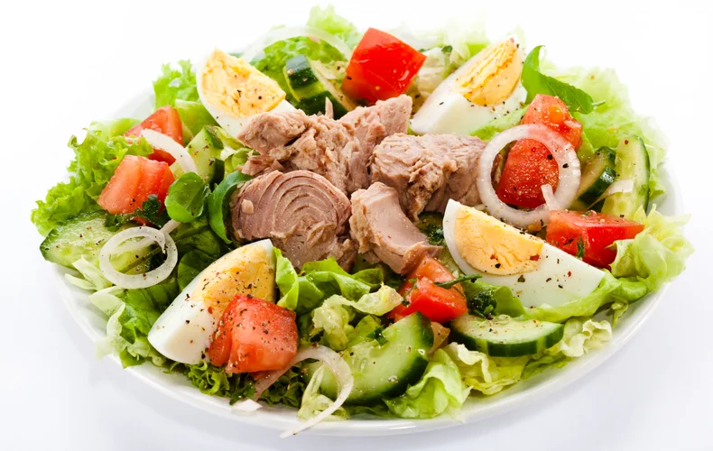
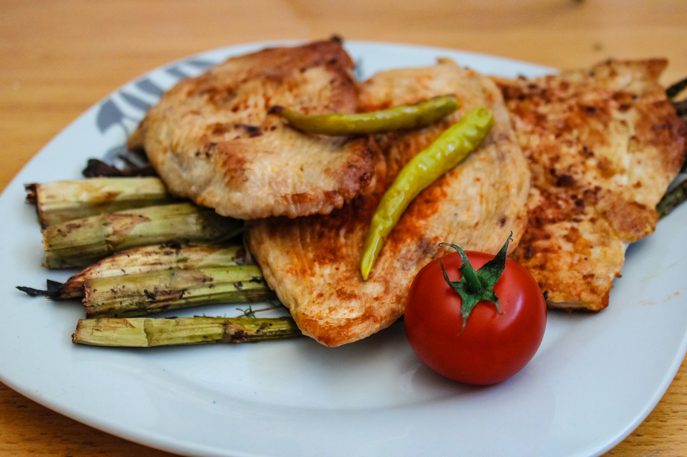

Pancake Proteici
Pancake ricchi di proteine con albumi d'uovo, farina d'avena e frutti di bosco. Perfetti per iniziare la giornata con energia.
Scopri deliziose ricette pensate per il tuo allenamento.

Pancake ricchi di proteine con albumi d'uovo, farina d'avena e frutti di bosco. Perfetti per iniziare la giornata con energia.

Uova strapazzate ricche di proteine con pane integrale tostato. Colazione veloce e nutriente per iniziare la giornata.

Petto di pollo magro grigliato con verdure fresche e riso integrale. Ricco di proteine magre e povero di grassi.

Insalata fresca con tonno artigianale, pomodori, cetrioli e olio d'oliva. Pranzo leggero e proteico.

Salmone fresco infornato con limone e broccoli. Ricco di omega-3 e proteine. Supporta la salute cardiovascolare.

Petto di tacchino al forno con verdure rostate. Proteine magre e facilmente digeribile per una cena leggera.